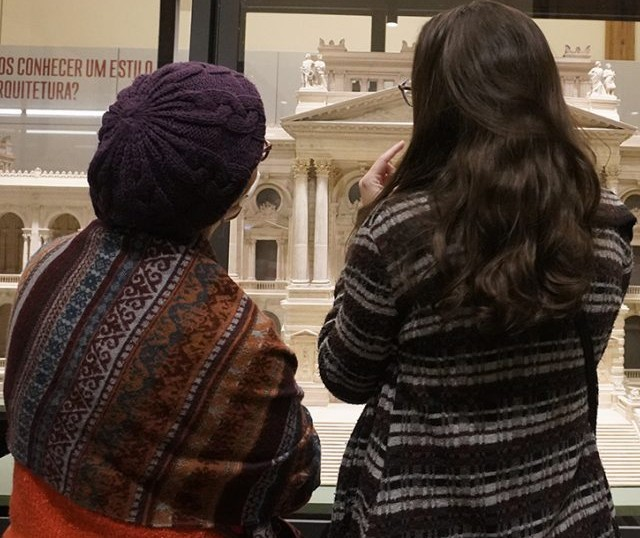

Exposições

EXPOSIÇÕES DE LONGA DURAÇÂO:
Para entender o Museu
Nesta exposição, abordam-se dois temas principais: a construção do Edifício- Monumento e as transformações do acervo no decorrer de sua história.
Quando foi criado, o Museu tinha coleções variadas de botânica, zoologia, etnologia, mineralogia. Ao longo dos anos, esses acervos foram sendo transferidos para outras instituições. Parte da coleção de arte também foi cedida para a Pinacoteca do Estado de São Paulo. O objetivo dessas transformações era fazer do Ipiranga um museu especializado em história. Além de todas essas mudanças, você poderá conhecer ainda a maquete que mostra como o edifício foi originalmente concebido. E, por meio de uma experiência imersiva, vai descobrir ainda o que é cultura material e como os pesquisadores estudam as sociedades por meio de objetos e imagens.
Uma História do Brasil
.jpg)
Para visitar esta exposição é necessário percorrer três espaços diferentes do Museu: Saguão, Escadaria e Salão Nobre. Esses ambientes foram decorados com esculturas e pinturas que apresentam uma versão da formação do Brasil. As obras representam bandeirantes e personagens do início da colonização portuguesa, além de personagens e eventos ligados à Independência. Também estão expostos os vasos com águas dos rios do Brasil e a pintura “Independência ou morte!”, de Pedro Américo.
Essa área do Museu é tombada por órgãos de preservação do patrimônio, o que significa que deve manter suas características originais. Por esse motivo, a sala permanece com a mesma apresentação da época na qual as últimas pinturas foram instaladas, na década de 1960. Mas isso não impede que seja discutida e interpretada a partir de novos olhares, que são apresentados nesta exposição.
Passados imaginados

Nesta exposição, é possível conhecer pinturas que representam cenas e personagens do passado brasileiro. São imagens bastante conhecidas e é provável que você já tenha visto alguma delas em livros escolares ou outros objetos do dia a dia. Muito discutidas atualmente, essas representações foram feitas a partir de visões elitistas, que desvalorizavam a presença dos indígenas e negros no passado brasileiro.
Aqui você também encontrará uma maquete e pinturas que representam a cidade de São Paulo há cerca de 150 anos.
Territórios em disputa

Esta exposição trata da formação do território brasileiro e dos conflitos entre portugueses, indígenas, espanhóis, franceses e holandeses, durante o processo de colonização.
Aqui você encontra mapas, instrumentos utilizados para navegação e objetos de pedra que foram utilizados nesse processo de ocupação e divisão territorial.
Esses objetos e imagens deixam claras a invasão de territórios, a destruição de aldeias, as mortes e a escravização de populações indígenas.
Diversos vídeos ilustram a exposição, trazendo diferentes pontos de vista sobre a colonização.